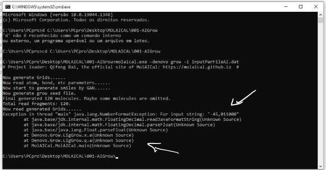

FAQ
1. Does MolAICal have GUI for running?
In the current version, MolAICal is mainly run by the command line. In the future, the GUI of MolAICal may be developed.
2. When do molecular growth in MS-DOS or PowerShell console by command: "molaical.exe -denovo grow -i InputParFile.dat", it shows some errors below "Now read generated Grid......" (see below figure)

Please check this issue: https://github.com/MolAICal/molaical.github.io/issues/4. The main reason is that molecular growth part of MolAICal is developed based on UTF-8 encoding (chcp 65001) and users' MS-DOS or PowerShell console does not use the supported code page such as 936, 65001, etc. Users can input the below command to change code page in MS-DOS：
#> chcp 65001
For more detail about code page, please check code page
Besides, in Linux operating system, it maybe show such similar problems, so please employ the right code page in Linux terminal console. Use below command to check the current character encoding in terminal console:
#> locale charmap
If users want to modify character encoding, they can edit .bashrc by adding the following lines:
export LC_ALL=en_US.UTF-8
export LANG=en_US.UTF-8
export LANGUAGE=en_US.UTF-8